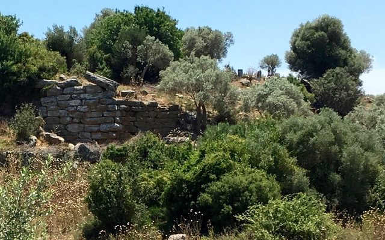
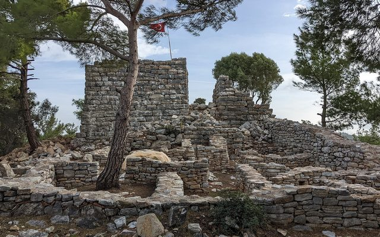

Kültür Varlıkları指南收录了穆拉的48个地点：32 考古遗址, 9 博物馆, 2 湖泊, 2 徒步路线, 1 漂流, 1 城堡与历史建筑, 1 峡谷。下面是重点推荐、地图和完整列表。
⭐ 重点推荐

1 · 穆拉 · 考古遗址尼多斯遗址
尼多斯位于达特恰半岛尖端、爱琴海与地中海交汇处，是一座拥有两个港口的多利安城市。它以艺术和科学闻名：据说普拉克西特列斯的阿佛洛狄忒像——最早的大型女性裸体雕像之一——就曾矗立于此，天文学家欧多克索斯和亚历山大灯塔的建筑师索斯特拉图斯都是尼多斯人。剧场、神庙、阿佛洛狄忒神庙的圆形基座和港口沿山坡层层分布；这里的日落令人难忘。

2 · 穆拉 · 考古遗址阿敏塔斯岩墓
阿敏塔斯岩墓凿在费特希耶市中心上方的悬崖上，是吕基亚最壮观的岩墓之一。它属于古城特尔梅索斯，年代为公元前 4 世纪，仿照神庙立面，有两根爱奥尼亚式石柱和山墙；铭文中提到了阿敏塔斯的名字。沿台阶即可到达，可以俯瞰费特希耶湾的全景，尤其是在日落时分，石头会染上金色。

3 · 穆拉 · 考古遗址阿莫斯古城
位于马尔马里斯图伦奇镇附近，是一座建在俯瞰库姆卢布克湾山丘上的希腊化时期卡里亚城镇。面海的剧场、神庙和城墙遗迹，规模虽小但景色绝佳。可与在库姆卢布克海滩游泳结合。
🗺 地图
📍 全部地点 (48)
考古遗址 (32)
尼多斯遗址考古遗址阿敏塔斯岩墓考古遗址阿莫斯古城考古遗址 阿尔萨达古城考古遗址
阿尔萨达古城考古遗址
巴尔吉利亚古城考古遗址 博德鲁姆古剧场考古遗址
博德鲁姆古剧场考古遗址 费特希耶盖米莱尔岛考古遗址
费特希耶盖米莱尔岛考古遗址 费特希耶卡亚柯伊遗址考古遗址
费特希耶卡亚柯伊遗址考古遗址 费特希耶莱顿遗址考古遗址
费特希耶莱顿遗址考古遗址 费特希耶皮纳拉遗址考古遗址
费特希耶皮纳拉遗址考古遗址 费特希耶特洛斯遗址考古遗址
费特希耶特洛斯遗址考古遗址 居米什凯森陵墓考古遗址
居米什凯森陵墓考古遗址 拉特莫斯的赫拉克利亚古城考古遗址
拉特莫斯的赫拉克利亚古城考古遗址 亚索斯遗址考古遗址
亚索斯遗址考古遗址 卡迪扬达古城考古遗址
卡迪扬达古城考古遗址 考诺斯遗址考古遗址
考诺斯遗址考古遗址 凯拉莫斯古城考古遗址
凯拉莫斯古城考古遗址 拉布劳恩达遗址考古遗址
拉布劳恩达遗址考古遗址 拉吉纳遗址考古遗址
拉吉纳遗址考古遗址 洛里马古堡考古遗址
洛里马古堡考古遗址 米拉斯贝钦城堡与遗址考古遗址
米拉斯贝钦城堡与遗址考古遗址 米拉斯欧罗莫斯遗址考古遗址
米拉斯欧罗莫斯遗址考古遗址 米拉斯乌尊尤瓦纪念墓与博物馆综合体考古遗址
米拉斯乌尊尤瓦纪念墓与博物馆综合体考古遗址 明多斯古城考古遗址
明多斯古城考古遗址
佩达萨古城考古遗址 皮德奈要塞考古遗址
皮德奈要塞考古遗址 塞迪尔岛遗址考古遗址
塞迪尔岛遗址考古遗址 西迪马古城考古遗址
西迪马古城考古遗址 斯特拉托尼凯亚遗址考古遗址希拉里马古城考古遗址赫卡托姆诺斯陵墓（乌宗尤瓦）考古遗址欧伊诺安达古城考古遗址
斯特拉托尼凯亚遗址考古遗址希拉里马古城考古遗址赫卡托姆诺斯陵墓（乌宗尤瓦）考古遗址欧伊诺安达古城考古遗址博物馆 (9)
 博德鲁姆水下考古博物馆博物馆
博德鲁姆水下考古博物馆博物馆 博德鲁姆摩索拉斯陵墓纪念博物馆博物馆
博德鲁姆摩索拉斯陵墓纪念博物馆博物馆 穆拉博物馆博物馆
穆拉博物馆博物馆 泽基·穆伦艺术博物馆博物馆博德鲁姆塞尔切港玻璃沉船展厅博物馆费特希耶博物馆博物馆马尔马里斯博物馆博物馆米拉斯石刻博物馆博物馆米拉斯亚索斯鱼市博物馆博物馆
泽基·穆伦艺术博物馆博物馆博德鲁姆塞尔切港玻璃沉船展厅博物馆费特希耶博物馆博物馆马尔马里斯博物馆博物馆米拉斯石刻博物馆博物馆米拉斯亚索斯鱼市博物馆博物馆